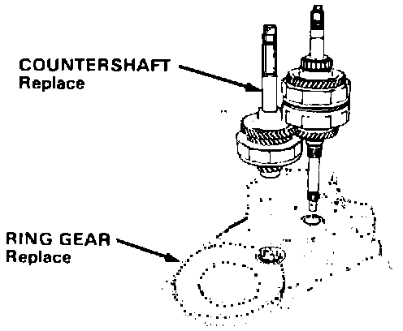
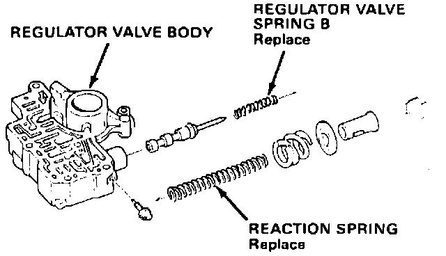

A/T - Final Drive Noise
March 28, 1988BULLETIN NO.: 88-008
YEAR '86-'87
MODEL LEGEND 4-DOOR
VIN APPLICATION ALL with A/T
A/T Final Drive Noise
SYMPTOM
A whining or clicking noise when lightly accelerating or decelerating at speeds below 40 mph.
PROBABLE CAUSE
The ring gear and countershaft were damaged when the transmission was shifted from park, neutral or drive, into reverse at high engine speed (above 3.000 rpm).
DIAGNOSIS
With the transmission oil at normal operating temperature, test drive and listen carefully.
^ The click may change to a whine above 20 mph
^ The "click" or "whine" will be most audible on light acceleration or deceleration and will probably diminish in volume above 40 mph.
NOTE:
^ Some noise from final drive gears is normal.
^ If in doubt, test drive a known good car toto compare the difference.
CORRECTIVE ACTION
^ Replace the ring gear and countershaft.
^ Install a stator reaction kit.
NOTE:
The stator reaction kit will reduce engagement shock and improve the toughness of the transmission, but will not eliminate ring gear and countershaft damage due to misuse.

1. Replace the countershaft and ring gear as described in the appropriate service manual with the new parts listed under parts information..
NOTE:
Check countershaft 3rd and 4th gear clearance before reassembling.

2. Remove the regulator valve body; replace regulator valve spring B and the reaction spring with the parts in the spring kit.
3. Reassemble transmission and road test as per service manual.
PARTS INFORMATION
Gear, final driven: 41233-PG4-030
Countershaft, comp.: 23220-PG4-050
Spring kit, reaction stator: 06271-PG4-305
Gasket kit C: 061C1-PG4-000
WARRANTY CLAIM INFORMATION
Operation Number: 219150
Flat rate time: 9.5 hours
Failed part P/N: 23220-PG2-960
Defect code: 042
Contention code: B07